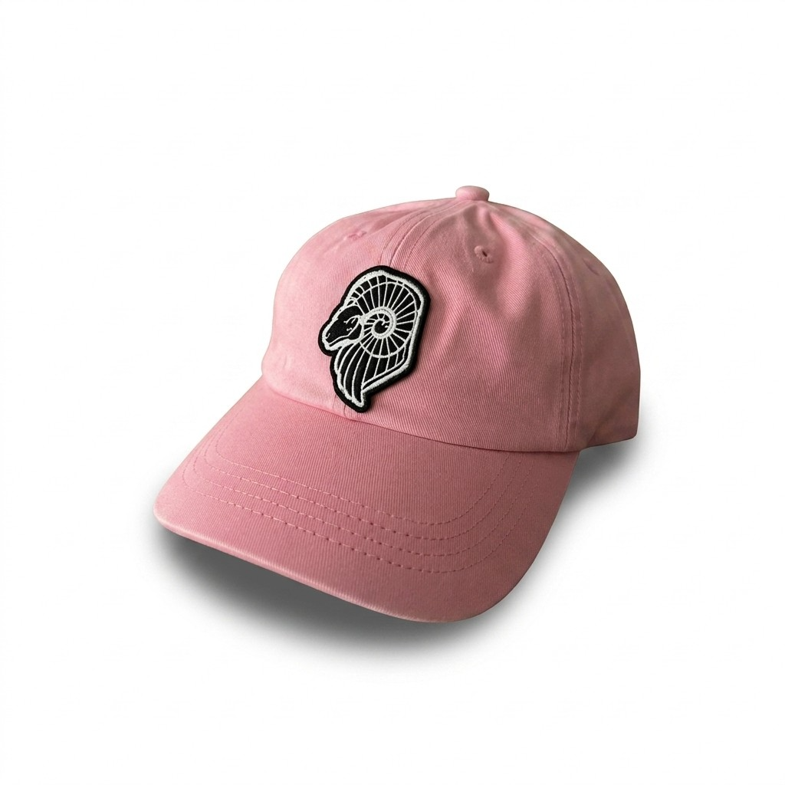

FABLE TRANSPARENTE SOBRE FUNDAÇÃO BRANCA DS·V1
Onde o branco respira e o traço fala baixo.
FABLE combina o lettering vazado e a base clara do AEX com o motion cinematográfico do guia Gemini e a malha editorial do Digital Architect — um único vocabulário para interfaces silenciosas e precisas.
Showreel Ariete
Vídeo embutido em painel de vidro — mídia viva dentro da primeira dobra.
Tipografia
Três vozes: Oswald (display condensado, sempre caixa-alta), Inter (corpo neutro) e Playfair Display itálico (acento editorial). Mono = stack padrão font-mono do Tailwind. Clique em qualquer linha para copiar o spec CSS.
lh 0.85 · ls −0.04em · UPPER
lh 0.95 · ls −0.02em · UPPER
lh 1.1 · ls −0.01em · UPPER
lh 1.2 · ls 0 · UPPER
lh 1.35 · ls −0.01em
lh 1.4 · ls 0.02em · UPPER
O sistema desenvolve superfícies de leitura para ambientes instáveis, onde a tipografia precisa sobreviver ao ruído.
lh 1.7 · ls 0
Texto corrente padrão para descrições, especificações e parágrafos de apoio em cards e seções.
lh 1.65 · ls 0
Texto compacto para painéis de hover, descrições secundárias e conteúdo denso.
lh 1.6 · ls 0
"Onde a natureza selvagem se cala."
lh 1.5 · ls 0
lh 1.4 · ls 0.28em · UPPER
lh 1.5 · ls 0.08em
Sistema de Cores
Seis tons, uma temperatura. Clique em qualquer cartão para copiar o HEX.
Variações de opacidade
// /70 texto secundário · /40 placeholder e disabled · /10 bordas e divisores
Participação em gradientes
// carvão→aço→alpina (heros) · overlay from-charcoal/80 (cards de foto) · cônico accent (botão beam)
| Papel semântico | Texto | Fundo | Borda | Hover / Ativo | Desabilitado | Contraste |
|---|---|---|---|---|---|---|
| Primary (Granito) | #2d322f sobre claros | botões sólidos | /10 divisores | → #3F556B | /40 | AAA 12.7:1 |
| Accent (Aço Glacial) | links, eyebrows | badges, CTAs hover | focus ring | +white text | /40 | AAA 7.7:1 |
| Neutral (Geleira/Alpina) | — | páginas, superfícies | ink/10 | → branco puro | — | base |
| Feedback (pulse) | accent + animate-pulse | dots de status | — | — | — | AA uso gráfico |
| Decorative (Musgo) | — | painéis hover /80 + blur | white/10 | slide-in | — | AAA c/ branco |
Componentes
// focus:border-[#3F556B] — mesmo padrão do footer AEX
// helper de erro — única cor fora da paleta, reservada a feedback

Ariete Rosa
R$ 320Flashlight + Tilt 3D
Mova o cursor: o radial-gradient persegue o mouse enquanto o card inclina em rotateX/rotateY com preserve-3d.

Alpino
Painel de musgo desliza no hover — assinatura dos setores AEX: blur, borda fina e linha que cresce.
sticky top-0 z-50+backdrop-blur-mdsobre fundo /90Entrada com .nav-load → .loaded(fade + slide do digital-architect)Seções claras: max-w-[1400px] px-6 lg:px-12 py-28· dobras escuras de respiro a cada 2–3 seçõesTodo bloco entra com .animate-on-scroll + animationInou.reveal + .delay-*
// modal: .modal-overlay (fade + blur de fundo) → .modal-box entra com translateY + scale + blur(6px)→0 no easing expo. Fecha no X, no overlay ou em ESC.
O Branco Também Fala no silêncio do contorno
Iconografia
Família Solar via web component <iconify-icon>. Variante linear para UI funcional (16–24px) e bold-duotone para destaques expressivos. Cor padrão: tinta /60; ativo: Aço Glacial.
Animações & Motion
Easing oficial: cubic-bezier(0.16, 1, 0.3, 1). Entradas entre 0.8s e 1.2s, com stagger de 0.1–0.2s entre irmãos. Clique em replay para rever cada demo.
Fade + translateY(30px) + blur(8px)→0. A entrada padrão de tudo (AEX typography.css), disparada por .animate-on-scroll.
Cascata do digital-architect: mesma transição, delays 0.1–0.7s. Use entre irmãos de um mesmo grid.
O texto sobe de trás de uma máscara overflow:hidden — entrada dos títulos de hero.
Feixe de luz atravessa o botão no hover (design_system4); versão contínua gira no pill cônico.
Radial-gradient segue --mouse-x/--mouse-y (animations-gemini). Variantes clara e escura.


Crossfade 1.5s + zoom lento de 10s por slide (digital-architect). Troca a cada 5s.
Parallax Cinemático
.js-hero-blind (persianas com stagger por distância do centro) e .js-immersive-bg (zoom + translate clampados) — ambos do parallax.js do AEX, rodando via requestAnimationFrame.
Gatilho de Viewport
scroll-reveal.js pausa qualquer .animate-on-scroll e libera com .animate ao entrar na tela (IntersectionObserver, threshold 0.1, once).